Pokeweed
Scientific Name(s): Phytolacca americana L.
Abundance: uncommon
What: young shoots & leaves, berry juice
How: young shoots & leaves boiled in three changes of water; berry juice boiled then made into jam/jelly
Where: woods, shady areas, sunny areas, fields
When: spring
Nutritional Value: vitamins
Dangers: all parts of plant contain different amounts of extremely toxic (fatal) alkaloid compounds, especially roots, stems, mature leaves, and seeds.
Medicinal Summary:
Root* - lymph flow stimulator; anti-inflammatory; anti-swelling; antibacterial (
tincture)
*extremely poisonous, only to be used by trained experts!
Young pokeweed plants, ready to be boiled then eaten.
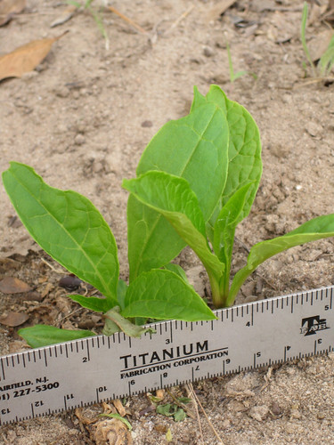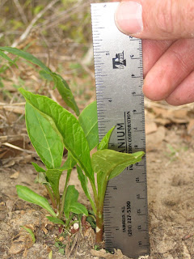The pokeweed on the left is a perfect size for eating, the one on the right is too big.
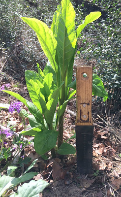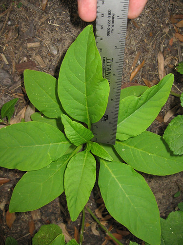Young sprouts next to a more mature pokeweed. Red color has already appeared in the older pokeweed's stem, indicating it is now unsafe to eat, even after multiple boilings.
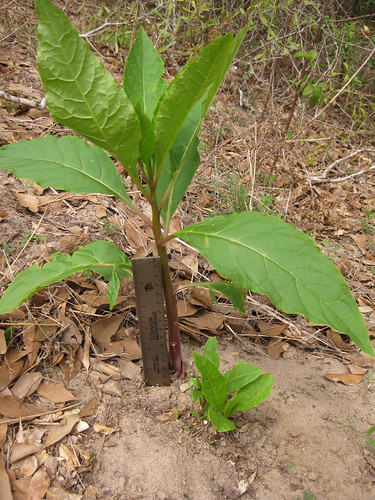Mature plants can grow to over 5' tall in one summer, making them one of the fastest growing plants in Texas. When mature they'll have red stalks, and multiple berry clusters as shown below.
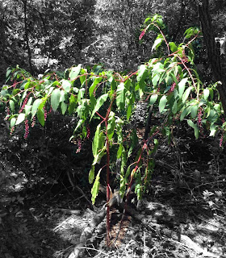Pokeweed leaves are hairless, pinnate-veined, alternate along the stem, edges are slightly "ruffled" with very minor scalloping, and can grow to over 10" in length!
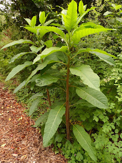Flowering pokeweed. There will usually be multiple flower spikes on the plant.
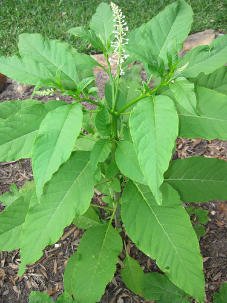Close-up of a flower spike. The flowers spiral up the spike. The round bulbs haven't blossomed yet.
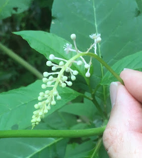 Extreme close-up of a single pokeweed flower. Note the five, white petals.
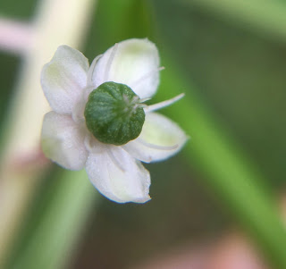After the flower are done the berries begin to grow. They remind me of squat, green pumpkins at first.
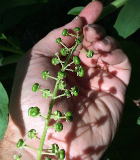The older berries, near the base of the spike, ripen to a purple color before the berries at the tip. The seeds are extremely poisonous but the pokeweed berry juice can be made into a jelly...very carefully!
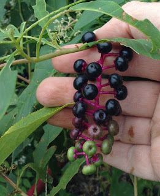Completely ripe, now. They form a single spiral down the stalk, just like the flowers did.
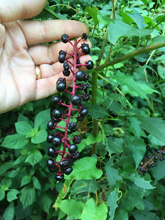Pokeweed was often one of the first greens to appear after a winter devoid of fresh plants and so it was cherished not just for its fantastic taste but also because it allowed satisfying a hunger for plants. It mainly grows in the protective yet sunny edges of woods with braver plants being out in full sun an others hiding in complete shade. It's bright green color stands out among the darker greens, browns, and grays of later winter plants. The stem starts out green like the leaves but quickly turns red as it matures. The youngest part of the stem at the top of the plant may stay green while the rest of the stem turns almost a purple-red color.
Young, boiled pokeweed leaves & shoots are considered a special treat in the South and a canned version is occasionally available in grocery stores. The pokeweed leaves must be harvested before there is any noticeable red color in the leaves or stem, usually when the plant is still under about six inches tall. Even at this young age there are highly toxic alkaloids present so the leaves must be boiled in three changes of water to render them safe enough to eat. Boil for five minutes in each change of water. Unfortunately, the required boiling does reduce their vitamin C content some but they will remain loaded with all sorts of other vitamins and minerals.
The seeds are very toxic even after cooking, but the juice of the berries can be made safe by boiling. After boiling the berry juice can be made into a jam or jelly. The berry juice can also be used as a dye or even as an ink.